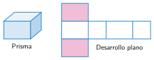

Apartado 12.2
Áreas y volúmenes de prismas y pirámides
Para calcular el área de un cuerpo geométrico conviene imaginar su desarrollo plano: las caras extendidas sobre el plano. El área total es la suma de las áreas de todas las caras.

12.2.1
Calcula el área total y el volumen de un cubo de \(4\) cm de arista. ¿Cuánto mide su diagonal?